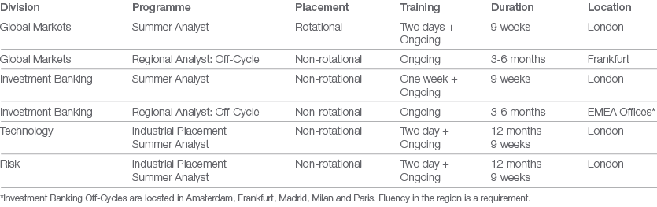

During an internship with Nomura, you can expect to experience the same level of exposure as a full-time Analyst. Through seminars and networking events, you will have the opportunity to gain exposure with Nomura professionals at all levels, and form strong working relationships. We strive to ensure you feel fully supported through ongoing training modules, an allocated buddy, and an assigned mentor; all to best help develop your career in financial services.
All Summer Analyst, Regional Analyst and Industrial Placement Programmes offer the opportunity to be considered for our Graduate Programmes.

The Global Markets internship programme takes place in our London office each summer.
What’s involved?
As a summer intern, you will build relationships and take on challenges as a full member of the team, allowing you to develop a unique experience that will be vital in your future career. You will gain valuable on-the-job training and see what makes us the most exciting proposition in the investment banking world. Roles could include:
Sales, Trading and Structuring
Sales - Develop and maintain strong relationships with the firm's clients which include banks, pension funds, hedge funds, insurance companies and corporate clients. Sales colleagues are responsible for delivering the capabilities of the firm in the form of services and products that best suit the clients’ needs.
Trading - Control and manage the firm's exposure to the markets by buying and selling securities and providing liquidity (market-making). Traders work together with sales, structuring and research in the development of trading strategies for our clients.
Research - Provide internal and external views and published research on sectors, companies and markets. Deliver insights, investment ideas and strategies for asset managers and internal clients that assume market risk.
Structuring - Design and develop innovative products and strategies that are tailored to specific client needs. Structurers work together with sales, trading and research to analyze the risk exposure of the firm’s clients, and deliver tailor-made solutions that address their needs.
Wholesale Digital Office
Strats - Research and development mathematical models and algorithms used in the trading business for market making, principal risk taking and portfolio management for both our systematic trading team as well as the broader Nomura Wholesale Business
Quants - Developing mathematical models for pricing and risk managing derivative trades, in partnership with the trading desks, and implementing them in the firm’s trading systems
New Business - Assisting in research or analysis of various disruptive technology investments including Fintec and Digital
The process
The Sales, Trading and Structuring internship programme will consist of two desk placements across the different functions of the Global Markets division. The teams you are placed in depend on our organisational needs at the time, however we will also take into account your preferences and the skills you demonstrate at interview. The Wholesale Digital Office internship is non-rotational.
Feedback
You will receive constant feedback throughout your internship. At the start of the programme you will be assigned a mentor and a buddy. Both will review your performance and offer you support, help and advice throughout your time with Nomura.
You can find out more from our graduates and their experiences here.
The London Investment Banking summer internship programme takes place in June for 9 weeks. During the internship, interns are placed on one desk, in either a sector or client financing and solutions team. We also offer a summer internship in our Zurich office placed in the Nomura Greentech team.
Our continental offices in Europe offer 3 to 6 month Analyst internships year round in Amsterdam, Frankfurt, Paris, Milan, Madrid.
Internships are designed as a spring-board to a career in investment banking. We will give you exposure to the challenges and opportunities a full-time Analyst will have in their first year with us.
What’s involved?
In addition to on-the-job experience, you will benefit from a series of training modules that will help you develop key professional skills. There will be a range of networking events with senior Nomura bankers and seminars to give you an in-depth knowledge of the division. This internship programme is the ideal opportunity for you to learn more about investment banking. The teams you could join are:
Sector Teams
Nomura�s sector teams identify and analyse deal opportunities and manage client relationships across sectors and key geographies teams to include the following:
- Consumer�– Provides advisory and financing services to a wide range of consumer facing businesses. Established base of both global mega-caps and smaller but ambitious corporate clients �
- Debt Advisory –�Focused on providing independent debt advice on M&A, brownfield and greenfield financing situations. Natural synergies with GII however sector agnostic with a focus on providing the best advice for the client through origination, structuring and execution. Debt advisory is highly active across EMEA and North America encompassing a wide spectrum of sectors including new technologies such as SAF and Hydrogen as first of a kind financing's
- Equity Advisory�– Nomura is the only global investment bank providing independent equity advisory services. We provide clients with advisory and support in executing equity-related transactions including IPO�s, Rights Issues, Accelerated Bookbuildings, Private Placements and Equity-Linked Products
- Financial Institutions Group�– Focus on coverage and execution for a wide range of clients across the UK, France/Benelux, Iberia, Italy, and Greece. Our clients span traditional FIG institutions like banks and insurers, and wealth/asset managers, trust/corporate services and other diversified financials
- Financial Sponsors�– Focusing on covering Financial Sponsor and Alternative Investment clients, including a broad range of Private Equity funds, Sovereign Wealth funds and Pension funds
- Greentech, Industrials and Infrastructure –�A cornerstone team in the EMEA IBD providing advisory and financing solutions across ten dynamic verticals among which: Low Carbon Infrastructure, Environmental Services & Technologies, Advanced Transportation, Renewable Energy Value Chain, AgTech & Sustainable Food and Digital Infrastructure. A well-established franchise highly regarded in the industry with an exceptional track record of originating and executing high profile transactions
- Healthcare�– Growing team with in depth industry expertise built through advising both Corporate and Financial Sponsor clients on acquisitions shaping the industry. In addition to M&A, the team has a track record of providing Leveraged Finance and Risk Solutions within a broad range of subsectors, including specialty pharma, biotechnology, medical technology, animal health and healthcare services
- Greece/CEE – Focused on originating and executing projects for clients in these core geographies, working across all Nomura sectors and financial products. Clients include corporates, financial institutions, financial sponsors as well as government and government related entities
- M&A�– Focusing on the execution and origination of domestic EMEA and cross-border transactions, with exposure to all industry and country teams
- Nordic�– Focuses on providing advisory services to, and maintaining relationships with, key Nordic corporates, financial sponsors and various Government ministries. In addition, the Nordic team works closely with Nomura�s industry and products teams on leverage finance and Risk Management Solutions
- Technology, Media & Services– Provides advisory and financing services to Corporate and Financial Sponsor clients across a wide range sub verticals within the Technology, Media and Services industries
Client Financing & Solutions
Nomura�s CFS division specialise in providing financing advisory services to clients through several different product streams:
- Acquisition &�Leveraged Finance�– provides debt financing for high profile private clients across a�wide range of industries and geographies
- Debt Capital�Markets�– Bridging Investment Banking with Global Markets, the DCM team connects borrowers�with investors by providing advice to both regular and new debt issuers on structuring and placing fixed income transactions in the international bond markets
- Debt Capital�Markets Syndicate�– Private side�trading desk which works in close collaboration with DCM and Global�Markets in the issuance of bonds
- Insurance Solutions Group – ISG originates, structures and executes bespoke credit and reinsurance solutions for clients – both sponsor-backed and strategics – across the insurance spectrum (Life, Non-Life, Insurance Linked Securities). Focus on innovative, attractive risk-return transactions that provide compelling insurance capital benefit or bridging to significant corporate finance events
- Risk Solutions Group�– RSG is a market leader in the origination and execution of tailor-made hedging solutions for Nomura�s investment banking client base across private equity and infrastructure. The team works directly with clients to implement strategies to manage and minimise the impact of interest rate fluctuations, foreign exchange uncertainties and inflation risks that are associated with M&A and refinancing transactions
The process
You will be placed in one team during your internship. Whichever team you are assigned to, you will benefit from a range of invaluable experiences that will give you a clear head-start on a career at Nomura.
Feedback
There will be constant feedback throughout your placement. At the start of your programme, you will be assigned a mentor and a buddy who will review your performance and offer you any help and advice you might need.
You can find out more from our graduates and their experiences here.
Our Risk programmes include a 9 week summer internship for penultimate year students or a 12 month Industrial Placement. You will be trained, placed in a business and encouraged to develop your skills. We will give you the opportunity to see how our Risk division functions and the role it plays in our business as a whole.
You will take on responsibility from day one, building strong working relationships and facing challenges as a full member of the team. As you progress in your internship, you will have the opportunity to take on extra responsibility, which will help you gain knowledge and experience, which will be vital to your career.
What's involved?
Depending on the team you join, responsibilities could include:
Operational Risk Management: You will work across our business functions to ensure they are managing their operational risks effectively. Using tools such as event reporting, KRIs, Risk Control Self Assessments (RCSAs) and scenario analysis, you will assist in the various aspects of the Operational Risk lifecycle, i.e. identification, assessment, remediation and monitoring, of Operational Risks identified.
New Business Group: Working with the New Business Group Managers, you will engage with a variety of business units and corporate functions, in several aspects of the New Product and New Transaction review and approval process, to ensure all new products and transaction have gone through the appropriate due diligence and to help support strong corporate governance and risk management.
Credit Risk: Alongside our credit officers, you will analyze the credit quality of hedge funds, corporates and financial institutions before we take them on as clients. You will obtain an overview of rating analysis, trading limits, reporting and advice provided by the Credit Risk analysts in managing our counterparty exposure.
Market Risk: Focused on fixed-income you will evaluate our exposure in cash and derivatives, making sure all relevant data is recorded and used in daily risk calculations. You will work with the Market Risk Managers gaining insight in to trading limits and mandates, market risk reporting and how they work with the business to identify and analyze market risks and concentrations.
You can find out more from our graduates and their experiences here.
Our Technology programmes include a 9 week summer internship for final year students or a 12 month Industrial Placement. You will be trained, placed in a business and encouraged to develop your skills. We will give you the opportunity to see how our Technology division functions and the role it plays in our business as a whole.
You will take on responsibility from day one, building strong working relationships and facing challenges as a full member of the team. As you progress in your internship, you will have the opportunity to take on extra responsibility, which will help you gain knowledge and experience, which will be vital to your career.
What's involved?
Technology at Nomura involves working with, and designing, state-of-the-art information technology and risk management systems. These are the systems that can often give us that crucial, split-second edge over our competitors. Work ranges from infrastructure support and deployment to in-house development of complex modelling software and applications.
This programme will give you the opportunity to develop new applications that keep us at the forefront of technology. You’ll develop an impressive level of technical knowledge, using a range of technologies (Java, C#, C++, SQL, Python, Perl, JavaScript, HTML/CSS and others) and frameworks (Spring, Maven, Camel, WPF, Node, React, and many others). Depending on your role, you’ll gain an understanding of different financial products, and build a valuable knowledge of risk management techniques and live trade analysis.
There is a wide breadth of roles available in technology. Your role will fit into one of the below:
Business Analysis – To help bridge the gap between the worlds of Technology and the business, Business Analysts are the intermediary through which each side can communicate effectively. Each modification we make to our in-house software requires complete understanding and agreement from both sides as to how things are to be changed, and as a Business Analyst you will facilitate this. You’ll be meeting regularly with business representatives to understand the problems that are currently occurring, and will be translating these problems into concrete requirements for the Development and Support teams. Analytical skills are a must for this role, as well as the ability to express an idea in more than one domain language.
Software Development – Bespoke software is at the heart of everything we do, and as a software developer you will help build out our ecosystem to help our clients and traders create and maintain a competitive advantage over other banks and organisations on the street. We write a large proportion of our software in-house and you could be involved with anything from generating real-time risk measures for our traders, to ensuring that payments to other companies are correctly collated, calculated and executed. As a software developer at Nomura, you will be designing, implementing and deploying solutions to meet rapidly changing business and regulatory needs. Strong coding skills and a logical outlook are a must.
Technical Support – To support the many systems that are written in house, our technical support teams are the first line of communication between our business users and Technology. As a member of one of our dedicated teams you’ll be doing anything from diagnosing and remediating issues in complex system flows to investigating previously unknown issues, all while in contact with traders or other business staff in a fast-paced environment. Excellent communication and technology knowledge are required to get the ‘big picture’ and disseminate information to find a solution to issues.
Bear in mind, that not all jobs fit into one of these categories, and can sometimes span two or all three!
Your role will be in the context of one of our IT divisions:
CTS – Corporate Technology Services is responsible for delivering and supporting business applications to Operations; Finance; Compliance; Investment Banking; and the rest of the Corporate divisions. CTS plays an essential role in servicing the Firm’s business needs and future direction by providing the appropriate solutions and capacity whilst also ensuring the ability of the Firm to report, monitor and supervise this business.
EIS – Enterprise Infrastructure Services are responsible for delivery and architecture of Nomura’s Core IT Infrastructure. Encompassing Cloud and Digital Technology, Systems Monitoring, Orchestration and Automation as well as more traditional enterprise IT Platforms (Storage, Servers, Virtualisation, Networks & Database). EIS offer technology services that underpin the banks application landscape, and provide front to back end user services that operate across technology and business disciplines. Offering an ever broader range of career options, EIS provide not only technology pathways in development, product engineering or technical support, but provide consultative services that form delivery of solutions within the bank spanning Business Analysis, Project Management, and Governance.
GMIT – Global Markets Technology develops and maintains software solutions for the Global Markets division. Our products are used around the globe and include trading, pricing, risk management, analytics, research and sales systems.
Risk IT – Risk IT supports the Risk Management division by developing and maintaining software solutions that calculate market and credit risk exposures and provide group-wide risk management capabilities in line with the firms’ risk appetite and regulatory requirements.
WPS – Wholesale Production Services provides business aligned 1st/2nd line IT Support and has global responsibility for the overall stability of the systems supporting the global wholesale businesses and the supporting functions (e.g. Front Office, Operations, Risk, Finance, Compliance). Wholesale Production Services is responsible and accountable for monitoring the environment to proactively identify issues, incident management, release management, disaster recovery, capacity management and application support.
You can find out more from our graduates and their experiences here.


{kind=link}
{kind=link}
{kind=link}
{kind=link}
{kind=link}
{kind=link}
{kind=link}
{kind=link}
{kind=link}
{kind=link}
{kind=link}
{kind=link}
{kind=link}
{kind=link}
{kind=link}
{kind=link}
{kind=link}
{kind=link}